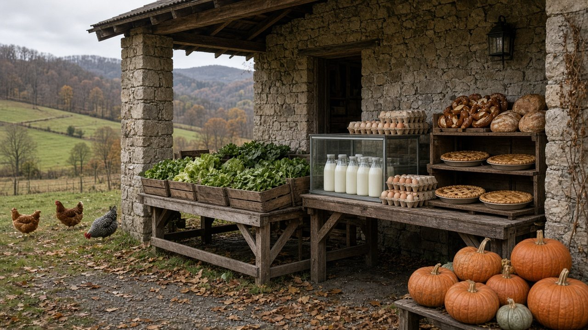

A family farm store on the historic 24-acre Manor Farm, with produce grown on the farm, pasture-raised eggs and meat, raw milk and cheeses, and fresh-baked pretzels, pies and bread.
OPEN YEAR ROUND
Sample photo“Patronizing a local farm is an indication of trust.”ELMER, NEXTDOOR “OUR STORY”
Farm-grown produce is grown without pesticides (not certified organic).
Fresh-baked soft pretzels, pies and bread, plus cookie platters and macarons.
Extended hours Monday, Nov 23 and Tuesday, Nov 24, 8:30 AM–7 PM. Pies, cookies and gift baskets can be ordered for Thanksgiving.
The farm's guard dog keeps watch over the hens.
Visitors can pet some of the farm animals.
Free hot apple cider on market days this November.
“Very nice family who runs the farm. Home-baked goods and pretzels can't be beat. Excellent canned goods, raw milk and cheeses. Produce fresh same day and all-natural.”NEXTDOOR · OCT 2026
“I love knowing which produce is grown on the farm and which is brought in-all of it delicious!”NEXTDOOR · AUG 2026
4.9 on Google (19 reviews) · 147 Nextdoor recommendations
Please confirm the street name: Google lists 1410 Manor Rd and Nextdoor lists 1410 South Manor Road.
Please confirm the main phone. Listings show (610) 380-3596; a Nov 2026 Thanksgiving order post lists 223-346-0305.
Open year round.